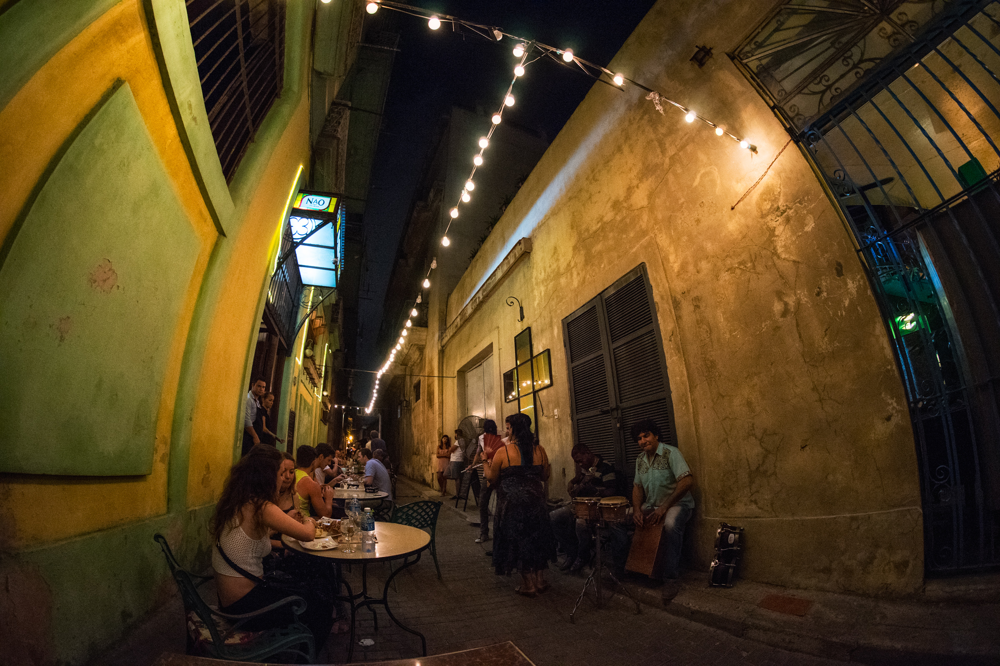

Cristina García’s 2003 novel Monkey Hunting spans four generations of migration between China, Cuba, the US, and Vietnam. The story follows Chen Pan and his descendants across oceans and continents, through tragedy and triumph. García work engages
a rhetoric of death and rebirth to tell stories of departure, journey, and the repositioning of identity. In this essay, I examine what her novel can tell us about the immigrant’s process of living within and becoming part of a new community.
I read the experience of migration as a complex physical and a spiritual passage. More specifically, I am interested in how García’s depiction of migration employs language of death and renewal and, furthermore, how this rhetoric corresponds with
certain elements and figurations of social rites that center around rebirth. Purpose of website and how it works (links, second column)
Outline of Website+Essay: Outline/Text/Author/Essay: outline
The essay has two parts. The outline above provides a way to jump to different sections. You can also find the chapters as tabs on the sidebar menu.
The first half of this essay looks at the process of Chen Pan’s transition into Cuban society through ritual elements of migration. His story celebrates his successful establishment in Cuba and his full life. But this ending is very different from
that of Domingo’s story – the last time we see him, he is a lost and wandering young man.
The second half of the essay explores why Domingo Chen is unable to find a new home off the island. I highlight elements of the ritual process that appear as part of the migrations of both Chens and where their resembling journeys diverge to finally
propose what I read as a strong social critique presented in the novel.

Cristina García tells the stories of three generations that are defined by exile. Her text presents complex identity negotiations provoked by migration, displacement and the search for home. Chen Pan, one of Monkey Huntings’
main characters, leaves China in 1857 when he is twenty-one years old. He travels to Cuba to work as an indentured servant in the sugar cane fields. The novel begins with his departure for the island and ends with the moments preceding his death
sixty years later. The majority of the text in-between tells of his voyage and servitude, his successful establishment in Havana, and his life as an older man.
Placeholder for map+route marked with years
Chen Pan’s life path structures the 251-page novel while the rest of the text interweaves the stories of his granddaughter, Chen Fang and great-grandson, Domingo Chen. The lives of these three characters make up the novel’s fifteen chapters, which
divide into three sections to represent the loosely paralleling life stages of these main characters. This essay compares Chen Pan’s migration with that of Domingo Chen, who leaves Cuba for New York City in the 1960s as an exile. Soon after, Domingo
Chen deploys with US forces to fight in the Vietnam War.
Placeholder for Domingo's route
"Essay intro page": Placeholder for video

Monkey Hunting engages a rhetoric of death and rebirth to tell stories of departure, journey, and the repositioning of identity. In this essay, I examine what her novel can tell us about the immigrant’s process of living within and becoming part
of a new community. With the following study, I hope to illuminate this cultural transition by focusing my reading on how the movement of people can be seen as a complex physical and a spiritual passage. More specifically, I am interested in how
García’s depiction of migration employs language of death and renewal and, furthermore, how this rhetoric corresponds with certain elements and figurations of social rites that center around rebirth. The stories of Chen Pan and Domingo provide
the textual foundation for this section as their experiences mirror each other in various ways throughout the novel. Ultimately, the tale of Chen Pan celebrates his successful establishment in Cuba and his full life. The first half of this chapter
looks at the process of Chen Pan’s transition into Cuban society through ritual elements of migration. His story ends very differently from Domingo’s narrative, which leaves Domingo as a lost and wandering young man. The second half of the paper
explores why Domingo Chen is unable to re-root himself in a new home. I highlight elements of the ritual process that appear as part of the migrations of both Chens and where their resembling journeys diverge to finally propose what I read as
a strong social critique presented in the novel.
I. Reading Migration through Ritual Rebirth
A. Rites of Passage and Displacement
When Chen Pen and Domingo Chen leave their homelands, they enter an in-between state of displacement. Detached from the “before,” the migrant undergoes an intermediate phase before he is able to establish himself “after” as a member of the new place’s
social fabric. The process of migrating and adapting to a new country is individual, complicated, and nuanced, but in García’s text I observe an overall pattern that I believe can deepen our understanding of how peoples and cultures connect.
In the novel, the in-between stage of migration only concludes when the immigrant finds closure with the past and emerges as a member of the new community. For example, upon leaving his village Chen Pan begins transitioning from the life he has known
in China to the one that awaits him in Cuba. His transition is not an immediate change, but rather a gradual process that is not complete until he becomes a member of Havana society. This period of change extends across years of his life, including
his time as an indentured servant and his stay in the jungle. Although he may be physically located in Cuba, he is not “re-rooted” there until he himself feels a part of the island and recognizes it as home.
Both Chen Pan and Domingo Chen caught within liminal stages that continue for long periods of time and stretch across vast distances as they struggle to pass from one social group to another. They experience a social transition that recalls ethnographer
Arnold van Gennep’s study of social processes in Les rites de passage (1909).
Van Gennep highlights three phases of a rite of passage: separation/preliminal (séparation), transition/liminal (marge), and incorporation/postliminal (agrégation).
1. The first stage signals the breaking with or departure from the initial state
2. The second stage encompasses the transitional phase
3. The third stage marks full integration into the new social position
Van Gennep’s second chapter, “The Territorial Passage,” is particularly interesting when considering the aspects of migration that align rites of passage. He begins with a discussion of historical boundaries between peoples and notes the shift of
natural borders to religious divisions and later political ones and the resulting delineation of territory (15-9). In doing so, he posits a direct link between migration (“crossing frontiers”) and social transition, although his research predominantly
focuses on ceremonial transitions practiced within a community. He envisions the individual human’s life as filled with a continuous and overlapping series of changes and sees the progression of time as developing through a succession of events
(3). Most commonly these life milestones are birth, adolescence, marriage, parenthood, advancement to a higher class, occupational specialization, and death (van Gennep 3). With these ideas, van Gennep provides a foundation in ritual studies that
has been greatly built upon, expanded, argued against, and developed.
B. Chen Pan Separates from his “Origins” (open page of “origins” video)
The novel’s first section, “Origins,” highlights Chen Pan’s departure from his homeland as a break with the past and the beginning of his transition into a new life. From its start, the story focuses on Chen Pan’s leaving and journey to the Americas,
choosing to reveal little about his homeland. Although the novel affords limited retrospective glimpses into Chen Pan’s past that add some depth of character, García lets most of his background remain obscured. In this way, the text purposefully
introduces him as a man who is already “in-between” as he has just exited his past life. For the reader, Chen Pan’s identity is immediately tied to his status as a migrant. Aside from a few scattered memories, the novel rather ambiguously relates
the short and only episode in which we see Chen Pan in China. Contained entirely within the prologue, all of the text that describes the time pre-departure appears in italics, setting it apart from the novel as a preceding description of “before.”
In this section, we find Chen Pan at a circus on the dock of the harbor from which he will depart for Cuba the next morning. Physically located where the land meets the sea, the harbor represents not only the beginning of his overseas journey, but
also occupies a place between his inland Chinese village and the island.
The liminal and carnivalesque aspects of the harbor space that surround Chen Pan emphasize his entry into the transition stage. Victor Turner’s work develops van Gennep’s idea of the liminal phase. He underscores the initiate’s sense of disorientation
upon leaving the known and understood world (“Ritual Process” 27, 95). In accordance with Turner’s observations, Chen Pan feels lost and dazed at the circus as he floats through a cloud of opium smoke and dancing women. Time slows and space distorts
as his environment overwhelms him and he realizes the separation between these new experiences and his life in the village: “How far away [his home] seemed to him now” (4). After the prologue, the first chapter finds Chen Pan aboard the ship, again
foregrounding his identity as a migrant. Furthermore, Amoy (Xiamen), China, the city from which Chen Pan’s ship leaves, is the only Chinese city fully named in the entirety of the novel.
García cites places and towns in China using only the beginning letter followed by dashes (for example, “K-----” ). In this way, the text denies the reader any fixed geographical point to begin the past, instead asking us to situate Chen Pan’s “origin”
at the place and moment of departure. Chen Pan’s past remains a blur of memory about which sparingly little is revealed. Ironically titled “To Paradise,” Monkey Hunting’s first chapter relates Chen Pan’s crossing of the Indian and Atlantic Oceans
as one of the hundreds of indentured servants that left China for Cuba as part of la trata amarilla.
At sea, the passengers exist between their former lives of home and their hoped-for new beginnings on the island. If we recognize leaving China as a break with the previously known, the departure can be considered as an end or “death” of the former
existence in preparation for the beginning of a new life. Viewing migration in this way supports the idea of the journey as a transition phase between two lives, reminding us of van Gennep’s detailing of tribal rituals in which the initiate is considered
dead within the intermediary stage and reborn upon emergence from the liminal:
intermediary stage and reborn upon emergence from the liminal, In some tribes the novice is considered dead, and he remains dead for the duration of his novitiate. It lasts for a fairly long time and consists of a physical and mental weakening which
is undoubtedly intended to make him lose all recollection of his childhood existence […] Where the novice is considered dead, he is resurrected and taught how to live, but differently than in childhood. Whatever the variations of detail, a series
which conforms to the general pattern of rites of passage can always be discerned. (75)
When viewing the passage as a spiritual transition, we can see aspects of the migrant’s voyage that both liken it to a type of purgatorial holding stage and continues on the island. They must be endured before achieving a “rebirth.”
The prevalence of deathly language in the descriptions of the indentured servants’ suffering during the voyage encourages our reading of the scenes as closure of a previous life. Tales of ill-fated trips fill the passengers with fear as they hear
of “Death voyages. Devil ships. On one journey, there was nothing to eat on board except rice” (62). Soon, what was once only hearsay becomes the migrants’ reality: nine men die within the first month “not counting those killed in fights or beaten
to death by the crew” and one man hangs himself with strips of clothing, the sound of his swaying “like the slow tearing of silk” (13; 15). Importantly, the severity of the conditions described are also historically accurate.
>Onboard the ship, the passengers suffer physically from violence and “every manner of illness” (13). Thirst, starvation, abuse by captain’s guards, threats of mutiny, illness, and conflicts between passengers all contribute to the torturous suffering
of the journey: “Chen Pan watched men drink their own urine, lick moisture from the walls of the ship. A few swallowed seawater until their stomachs swelled and they choked in their own filth” (9). Death plagues the ship, a vessel carrying many men
who are, in many ways, “as good as dead” as they may not survive whatever awaits them. They must fight to survive the journey’s many obstacles as the sea and the ship become spaces saturated with death. These descriptions underscore the position of
the migrant as closer to the departed than to the living. In this way, the text continues to link migration and movement to ritual passages of transitions, emphasizing the journey as part of a crossing from one life into another.
Furthermore, the hellish language of death and unrest underscore the journey as liminal. These descriptions follow Turner in that “liminality is frequently likened to death” (“Ritual Process” 95). Aboard the ship, the passengers are miserable and
terrified of the unknown. A feeling of looming death overwhelms the migrants as many men die or commit suicide by poison, hanging, or jumping into the sea to end their suffering (14). Rumors of their doomed fate circulate amongst the passengers
and heighten their fear “that their ship was headed for the Philippines; that every last man on board would be killed there, heart scooped from his chest; that they’d be sold to cannibals who savored yellow flesh” (16). The ship entraps them in
“cramped, stinking squalor” and is “outfitted like a prison, with irons and grates”, encapsulating them in a vessel of pain, confusion, and violence (11; 8). The sea as a deadly space of crossing surrounds them in vast emptiness. This description
of the journey as filled with death and suffering enhances passage’s portrayal as part of Chen Pan’s liminal stage.
The physical and spiritual suffering and the atmosphere of death that imbues the journey presents one of the novel’s central themes: that migration is the movement of body and soul. Van Gennep writes that the departure from and the entry into a different
space requires “physically and magico-religiously” passing through an intermediate phase, emphasizing the crossing as affecting both the body and the spirit (18). Likewise, García’s characters experience migration as a physical relocation of body
and a spiritual journey of self. This idea is reinforced by the immediate problem that dying at sea presents for the migrants who have yet to settle in a new home: the absence of land denies the dead man a physical resting place and a proper burial,
without which the soul is unable to detach from the body and the spirit cannot to return to China. Those who die during the transition period leave the earth without a located home. To discuss the conflict between the dead body’s physical location
and the spirits’ desire to return to China, characters repeatedly refer to those who have died as ghosts. When Lin Chin dies of a brutal beating:
his body was dumped at sea. It was said that Lin Chin didn’t sink at first but floated alongside the ship for hours, his eyes fixed on the sky. Chen Pan wondered if the dead man’s ghost would find its way back to China. Or would it wander forever among
the unvirtuous and the depraved? (12)
The man does not sink to the sea’s bottom peacefully, but disturbingly follows the ship, his dead body mirroring the path of the migrants and refusing to fully surrender to the ocean depths. The migrating body carries a displaced soul and in this
way, a placeless death yields an aimless spirit. Without a home, the man’s ghost may wander forever, eternally a migrant, perpetually caught in a state of incomplete transition. Similarly, “The night the Wong brothers died, a squall engulfed the
sea. The storm ripped off a mast and tossed two officers overboard. The men feared that the brothers’ ghosts had cursed the ship, that they were causing the thunder and the lightning, the wind from eight directions, the waves as high as the Buddha’s
temples” (15). Their bodies left unsettled and their spirits without home, the Wong brothers inspire fear and are imagined as vengeful ghosts. They are caught in a space of crossing between lands and abandoned without the necessary burial rites.
Their unfortunate end again shows that dying at sea prohibits the deceased from attaining spiritual rest.
The novel develops the idea of migration as a spiritual and physical transition by including comparable beliefs of other cultural populations in Cuba, specifically those of the African slaves, and in doing so, García posits that these elements of
migration can be transcultural. The novel follows Chen Pan and his descendants; therefore Chinese tradition is weighted most heavily in the text, but García also mentions practices of the communities encountered by Chen Pan (and, to a lesser extent,
Domingo Chen in Vietnam). While working with the African slaves in the sugarcane fields, Chen Pan witnesses their death rituals and beliefs surrounding burial. Rita is a slave whom both Chen Pan and the slave master fancy. The passage describing
the death of her lover, Narciso, underscores displacement as informed by both the body and the soul’s need to re-root themselves. When the master impregnates Rita and Narciso is executed, “Nobody was allowed to bury him. Instead he was fed to the
bloodhounds before the entire barracón, piece by bloody piece. Poor Mandingo spirit, the slaves chanted, lost and forever wandering” (35). The slaves’ powerlessness to perform the proper burial rites denies Narciso’s spirit a return to the homeland.
Enslaved on the plantations, the Africans are trapped in a liminal state. The body needs to be ceremonially reunited with the earth in order to free the spirit from its wandering. If the burial is prohibited, as in the case of Narciso, the spirit
is forever lost, reminding us of the wandering ghosts of the Chinese men who die at sea.
C. Chen Pan on the Plantation
The depiction of the passage from China to Cuba initiates the turmoil that the Chinese will endure as indentured servants on the island. Spectral descriptions loom in the recounting of this time on the plantation, “Chen Pan looked out the window at
the passing sugarcane fields, at their endless, swaying green. How inviting they looked from this distance. Who could fathom the mountain of corpses that had made these fields possible?” (190). Many Chinese and African workers commit suicide and
death and pain permeate the landscape to such an extent that a century later Domingo remembers his father telling him, “To work the sugarcane fields […] was to go wooing mournful ghosts. The chain gangs of runaway souls, ankles ulcerated and iron-eaten
and wrapped in rags. Or the luckier suicide ghosts who’d killed themselves dressed in their Sunday best” (48-9). The spirits of those who suffered and died in the fields linger to haunt the land with memories. During Chen Pan’s time, the indentured
servants and slaves are forced to work, robbed of their freedom and, in many ways, their lives.
Suffering surrounds Chen Pan so much that he begins to think of himself as a man who is less than alive. We see this in Chen Pan’s failed attempts at writing letters home to China to assure his aunt, wife, or brother that he is not dead. He never
finishes his letters, “Better to let everyone think that brigands had robbed and killed him, that vultures had come and plucked out his eyes. He knew that his wife would burn incense in his name, urging his ghost home” (32). Chen Pan’s status as
an indentured servant holds him in a liminal position. In the preceding text, we see that he still recognizes China as the closest place he has to a home, but he is unwilling to establish any communication with his family there. It also reveals
that if his wife received news of his death, she would hope for his ghost’s return as Chen Pan does not yet belong anywhere else. This in-between position of his soul reminds us of Narciso’s wandering spirit. Furthermore, in his reluctance to prove
that he is alive, Chen Pan chooses to allow his family to assume that he is dead. Leaving his family to consider him deceased in China reinforces Chen Pan’s severance with his former life even as he is still yet to find a new one in Cuba.
As an indentured servant, Chen Pan remains in a transition phase because he is unable to establish a life in Cuban society as a free man. He exists between what he has left behind in China and what he strives to achieve in Cuba. During this time,
Chen Pan works as a servant in hopes of crossing out of this state, however, for the years he is unable to do so he is caught in this “in-between” position where he works without any rights or voice. Restricted from acting as a full member of society,
Chen Pan is confined to the margins and to a liminal existence, an idea Turner develops from van Gennep’s outlining of ritual phases.
Turner utilizes the term “liminal” to expand upon the understanding of the intermediary phase of social rites, describing this position as “being-on-a-threshold […] betwixt-and-between the normal, day-to-day cultural and social states and processes…”
(“Frame, Flow” 465). He extends the idea of the liminal threshold to more than a transitional moment by emphasizing the space it encompasses as “between.” His writings transfer the focus from the liminal as a crossing to the idea that the place
of transition itself can occupy a space suspended between two central power structures. In this way, liminal identity and marginalized social position are connected to the ritual process. Chen Pan finds himself in this position upon arriving to
the island where he feels lost and unsure of who he is. Unsure of how to help himself or secure a future, he wonders, “Who was he now without his country?” and feels his dreams have been lost in vain (21; 30).
Turner also underscores ambiguity as a necessary condition of the liminal state “since this condition and these persons elude or slip through the network of classifications that normally locate states and positions in cultural space” (“Ritual Process”
95). “Vanishing Smoke,” the title of the chapter describing Chen Pan’s time cutting sugarcane and his escape to the forest, lends a spectral aspect to the text. It also suggests the liminal quality of Chen Pan’s state and refers to the nickname
of the legendary first Chinese cimarrón in whose footsteps Chen Pan follows, likening the two men who disappear, like smoke, from their plantations.
D. Chen Pan Exits the Liminal and Re-Roots Himself
Chen Pan flees indentured servitude into the Cuban jungle, a space that facilitates his establishment in Havana. The year he spends in the jungle represents the culmination of his transition phase. The forest exists outside of the rules and norms
of society that bind Chen Pan to indentured servitude and force him to occupy a marginalized position. Within what he deems the “semi-civilized world,” van Gennep notes that “deserts, marshes, and most frequently virgin forests” are often zones
of neutrality that physically mark a liminal zone (18). Between the rural sugar cane plantations and the city, the social structures of the outside disappear within the forest. Wandering in this jungle, Chen Pan still embodies the role of a migrant
seeking refuge, “Chen Pan walked and walked until his feet bled, following streams and the slow rotation of stars” (40). Chen Pan looks to nature in an attempt to orient himself in the woods, reminding us of Turner’s assertion that the wilderness
frequently acts as a liminal space and that the initiate often experiences disorientation within the transition stage (“Ritual Process” 95).The jungle provides a liminal space for the final steps of Chen Pan’s social transition.
Chen Pan’s year in the jungle also recalls van Gennep’s studies of a Congolese tribe’s rite of passage for adolescents into adulthood, “The order of the rites is as follows: the novice is separated from his previous environment, in relation to which
he is dead, in order to be incorporated into his new one. He is taken into the forest, where he is subjected to seclusion, lustration, flagellation, and intoxication with palm wine, resulting in anesthesia” (81). Chen Pan’s experience loosely follows
this structure—he is assumed dead by the outside world and he enters a forest where he faces a series of trials. Within the jungle, he seems to lose some of his body’s material presence, “His own shadow grew unfamiliar to him, thin and strangely
angled” (40). Chen Pan’s contorted shadow suggests a diminished and withering substance, reiterating his status as less than fully alive.
Chen Pan’s time in the forest is dark and ominous, much like the scenes aboard the ship and in the fields. However, the language describing the physical crossing of the ocean emphasizes death as corporal. As Chen Pan approaches the threshold of his
new life in the jungle, the symbols and atmosphere of death that surround him seem less physically threatening and more mystically and spiritually charged. Omens of death pervade the forest as bloodhounds pursue Chen Pan with “devil ghosts” in their
throats, the wind carries the sounds of their howling, and owls shriek at him in Chinese (39). The moonless silence augments the feeling of impending danger. Later the moon appears and “The forest turned cemetery-quiet. Moonlight unsettled the trees”
and Chen Pan remembers that “The Africans had spoken of the restless demons that roamed the island’s woods, disguised in animal furs” (41; 39). Lydia Cabrera reminds us of the monte’s spiritual significance in Afro-Cuban syncretic religions, describing
the sacred mountain’s forests as a supernatural space governed by its own law, a dangerous “dominio natural de los espíritus” (18). The haunting language culminates on the monte, but appears through the various stages of Chen Pan’s prolonged transition
phase (the voyage, the years in the fields, the time in the jungle). The similar frightful elements and the rhetoric of death unify these years as a liminal period in Chen Pan’s life. Ultimately the exiting of this forest space corresponds with
the conclusion of Chen Pan’s transition phase. As this time draws to a close, the spiritual elements of the liminal intensify to reflect Chen Pan’s need to face his internal conflicts.
To leave the jungle and enter his new life, Chen Pan not only needs to survive the spooky wilderness but he must also turn inwards and confront his past. The year in the forest acts as the last phase of the holding period when Chen Pan overcomes the
final spiritual and physical trials. These internal battles appear in the form of a brown owl. He believes the bird to be a manifestation of his mother’s disturbed spirit, come to haunt him in retribution for abandoning her and failing to fulfill
his filial duties of sending money or producing a grandson (39). Chen Pan faces his mother’s disappointment by enduring the owl’s presence and working to appease her spirit. He remembers, “In China it was said that owl chicks ate their mothers as
soon as they were big enough to fly” (40). Like the owlets devour the owl upon being able to leave the nest and begin their own lives, Chen Pan needs to shed his mother’s ghost before he can leave the forest, perhaps reminding us of van Gennep’s
observation that birth (in Chen Pan’s case, “rebirth”) necessarily includes a rite of separation from the mother (“Rites of Passage” 50-2). Chen Pan is considering eating the owl when she abruptly disappears. For the time she follows him, Chen Pan
withstands her presence. Her disappearance acts as a resolution that represents Chen Pan’s cutting of ties with and completion of his duties to his mother, and in many ways, his past. Significantly, the owl torments Chen Pan for nine months. He
sustains the owl’s pestering presence for the same amount of time as the human gestation period, underscoring the bird’s disappearance as the completion of a renewal and “rebirth.”
In addition to the emotional trials Chen Pan overcomes and his survival in the wild, an essential element of his passage into Cuban society is that he physically unites with the environment. Chen Pan leaves the forest ready to fully recognize Havana
as home only after a union with the nature of the island takes place. First, he climbs to the top of a ceiba tree where he “will[s] himself invisible” (39). He tries to disappear altogether, to blend into his surroundings and become part of the
habitat around him. The presence of the ceiba is spiritually significant, which García points out by reminding us of its sacred role in African belief systems, “the tree was their mother; her sap, blood; her touch, a tender caress” (38). Identifying
the tree as a mother presence further enhances the reading of Chen Pan’s transformation in the jungle as one of rebirth. He sits at the roots of the tree, finds himself among the talismans buried there, and rubs his body with “its sacred earth”
(38). In this spiritually-charged place, he unites with the land. Later:
He remembered something his father had told him. It is in death alone that we return home. So Chen Pan arranged a bed of cobwebs and silvery leaves on the bat guano that cushioned the floor of a limestone cave, smeared pollen on his face and hands.
He would die there, leave his bones to crumble. He would die there in that nowhere cave, and then his ghost would fly home to China. (41)
Chen Pan prepares himself for the end of his life and buries his body, covering himself with dirt, so much so that his skin becomes “red-brown as the island earth” (41). The ritual aspects of death/rebirth (burial) and joining with the earth conflate
in a way that recalls van Gennep’s discussion of Albrecht Dieterich’s writing in Mutter Erde (1905) to identify “some resemblances in the details of certain birth and funeral rites” (52). Van Gennep suggests that some of what Dieterich viewed as
rites of incorporation with Mother Earth were actually rites of separation (52). In Chen Pan’s case, the year in the Cuban jungle closes his transitional identity as a migrant, ending the process of separation from his “before” life in China. His
burial not only marks an end, but also completes the crossing of a threshold into his new life. In these moments preparing himself for death, he still does not consider Cuba home and assumes his spirit will try to return to its home of “before.”
But when Chen Pan awakes the morning following his self-burial, his spirit has not returned to China. Instead, the burial and symbolic death within the liminal jungle completes the transition stage and frees Chen Pan’s spirit from its ties to a
former land. He can now find his home in Cuba.
El personaje practica todos los rituales necesarios para despedirse de ella adecuadamente, para que descanse y lo deje a él vivir en paz en su nueva vida. Simbólicamente, este es el primer paso de la transformación de la identidad de Chen Pan. Su
madre patria china ha muerto y Chen Pan reconoce que no amaba a la esposa que dejó sin hijos en China. Ahora, en la nueva tierra, empezará la búsqueda de su nueva patria. Su transformación hacia una nueva realidad transculturada comienza en el monte
con el cambio de su color de piel por el sol y la referencia al valor sagrado de la ceiba, en la que confía, por ser el árbol sagrado de sus amigos negros. (175)
Overcoming the external obstacles of the jungle and the internal ghosts of his past signifies Chen Pan’s advancement through the transition phase and, with it, his readiness to fully re-enter the living world and freely establish a new life. Zapata-Calle
notes the ending of emotional ties with his family in China and the physical adaptation to the nature of the island as necessary to this process. With these trials completed, Chen Pan leaves the jungle.
After the episode relating Chen Pan’s success in the jungle, the novel jumps forward seven years to find him achieving remarkable success in Chinatown as a businessman. The narrative underscores that Chen Pan’s fortunate rise in Havana’s Chinatown
coincides with his identification of Cuba as home. However, Douglas Davies reminds us of the importance of recognizing
a distinction […] between status and identity, […] At its simplest, status can be viewed as coming from society, as something which is accorded to an individual either because of their birth-right or else through personal achievement. Identity, by
contrast, reflects the more internal process of becoming what one is supposed to be. It often takes time for the internal change to match the externally granted position. (7)
Chen Pan’s movement from indentured servitude on the fringes of society to his role as a community leader and business owner in central Havana represents the social and internal processes of reinvention. He accepts a separation from his Chinese life,
which allows him to self-identify as Cuban (his later assistance to the soldiers fighting in the Ten Year’s War highlights his loyalty to his island home). Still, his “death” or distance from his past life and embracement of Cubanness does not mean
that he forgoes his Chinese heritage. In fact, the novel reveals that he maintains various traditional Chinese practices. Chen Pan takes pride in his home culture while also embracing his identity as Cuban. During the rest of Chen Pan’s long life
on the island, he wavers between moments of feeling more attached to his Chinese heritage and more connected to his Caribbean home. In this way, a mix of cultures informs his sense of self, pushing and pulling within him. The process of “rebirth”
does not erase or take away what came before but, importantly, it allows Chen Pan to make Cuba his new home and find acceptance there.
Six years after his time in the jungle, Chen Pan feels deeply that Havana is his city: “Chen Pan never understood what the sight of Havana, with its seductive curve of the coast, stirred in him; only that from the moment he arrived, he knew it was
where he belonged” (62). Those in Havana also come to recognize him as part of the city: “The ginger vendor nodded when he saw Chen Pan. Others did, too. Everyone knew him in Chinatown. His regular customers called him un chino aplatanado, a Chinese
transplant. The recent arrivals from China wanted to be like him, rich and unflinching” (62). Chen Pan achieves impressive status in Chinatown.
He belongs to a community in which he is admired as a leader by other Chinese immigrants. Additionally, the use of “aplatanado” in Chen Pan’s nickname signals an identity in Spanish, specifically Caribbean Spanish. He is known beyond Chinatown with
a phrase that means “becoming native” in the dominant language on the island, signifying that he has found a place there as Cuban despite encountering many by racial, cultural, and linguistic differences as an immigrant.
Chen Pan’s exit from the liminal phase is possible only after he overcomes his internal conflicts and physically endures the island’s natural environment. Reading Chen Pan’s transition into Cuban society as a mental and physical process writes the
experience of migration as a movement of the body and soul. Earlier in the novel, Chen Pan remembers his father telling him, “If it was true that man had two souls, one of the body and the other ethereal, then they would merge with the earth and
the air after death” (10). His father’s words correspond with the beliefs regarding death of the Chinese on the ship and of the African slaves and reinforces the necessity of connecting to the earth in death. His statement again likens burial to
Chen Pan covering himself at the foot of the ceiba, the earth allowing for the release of both souls. It highlights the importance of Chen Pan’s transition period as both of the body and of the mind so that he can find himself completely in his
new home. The novel presents a migrant who assimilates to Cuban society after he completes a ritual-like transition that occurs during the voyage, on the plantation, and then culminates in the wilderness.
II. A Social Message Within Monkey Hunting
A. Introduction
García’s migrants suffer because of human corruption. She writes the destruction of everyday people at the hands of Caribbean slave owners and Chinese warlords, by the Communist Party of Cuba and US occupation forces on the island, and because of
the senseless violence of soldiers and generals on both sides of the war in Southeast Asia. By telling these stories, the novel brings to light the unsettling status quo of historical oppression and “prob[es] and revisit[s] traumatic moments in
history, saving them from silence and oblivion” (Lysik 293). While doing so, García’s narrative consistently avoids any outright alignment with a particular political philosophy, preferring to describe the hardship and pain inflicted throughout
history by powerful exploitive forces.
Sean Moiles agrees that the novel presents the threats of “absolutist, totalitarian visions and policies” regardless of where their governing beliefs fall on the political spectrum (171). Through the stories of Chen Fang and Domingo, the novel highlights
the suffering inflicted by authoritarian communism and colonizing capitalism. He also argues that the novel constructs a political argument that draws parallels between corrupt histories to criticize totalitarian communism, Western imperialism,
and capitalism, suggesting that the one hundred and thirteen year scope of the novel highlights the repeated exploitation of entire groups of people throughout the last two centuries, “In terms of political parallels, García’s historical portrayal
of Chinese servitude functions [. . . to] suggest[] an analogy between the brutalities of Cuban sugar plantations and the profit-seeking methods of global, neoliberal capitalism—exercised, for example, on outsourced workers in the developing world”
(179). He puts forth this reading in support of Raphael Dalleo and Elena Machado Sáez’s claim that after the 1960s, contemporary Latinx writers creatively engage with the past to call for social change (Moiles 168; Dalleo and Sáez 7).
The text likens seemingly opposing systems to describe how abuse within them results in similar evils. Through the suffering of its characters, we read of how greed and power tear families apart, divide communities, and marginalize entire groups of
people. Corruption oppresses those who are vulnerable most: migrants and those without a “place” in society. Yu-Fang Cho sees the focus on these stories as a means of recuperating what has been lost or ignored by hegemonic accounts of the past:
“García’s re-narration of transnational histories of multi-racial formations as a critical response to the long tradition of Euro-American travel writings and Orientalist narratives which reproduce White Euro-Americans as the privileged subjects
and the authority of colonial enterprises” (2). She studies how the novel creates alternative histories and suggests that doing so goes beyond reading the text as a postmodern questioning of history or a critique of social systems to also allow
us to see the work as a “radical vision of imaginary and epistemological emancipation” (2-3). The novel does so through its cyclical narrative that questions the structuring of history through empire and Western imperialism and presents stories
otherwise lost from colonial archives (3).
Both Moiles and Cho propose insightful and thought-provoking analyses of Monkey Hunting. In the following section, I suggest a different, but congruent, reading that follows the study of the text through the language of death, life, rebirth, and rites
of passage presented in the first part of this chapter. The narrative strains of ritual process in Monkey Hunting provide a base for what I propose is the novel’s critical view of global society: that corrupt power structures that function with
a lack of regard for humanity result in the enslavement of populations, the poisoning of the earth, and the ostracizing of complex subaltern identities.
B. Exceptional Chen Pan and the Suffering of His Descendants
The migrants of García’s novel leave their countries in pursuit of possibilities not afforded to them by the conditions in their homelands. When they emigrate, they are not rich or well off, but poor, oppressed and in search of a better life. The
leaders’ abuse of power leaders leaves much of the population with little option but to move elsewhere. Many choose this journey to avoid death and/or in hopes of opportunity and stability not available in their countries of birth, “Chen Pan heard
heart-sorrow stories. Famine and civil war were rampant back home, they reported. Long-haired rebels were destroying everything. Boys were being kidnapped and carried from their plows against their will. There were mutinies on the high seas” (62).
In perilous transition, the migrants find themselves between the harsh reality of their home and the possible futures of the new land. Those who depart China during Chen Pan’s time leave a country of famine and violent upheaval, of “forced conscriptions
[. . .] the young men sent far to the north, to lands of interminable winters and roaring bears” (86). The circumstances in their countries of origin are precarious or with little chance for the future—so much so that the better option entails
a long voyage into the unknown that is plagued by mutiny, disease, and starvation. Emigrating brings almost unimaginable hardship. It also means confronting unknown circumstances that can alter the migrant’s life in unexpected ways, “Chen Pan
thought of how a man could start out with one idea—like sailing off to Cuba to get rich enough to return home an important man—and end up with another life altogether. This never could have happened in China. There the future was always a loyal
continuation of the past” (70). The text at times champions the bravery and optimism of its characters, highlighting that such a choice permits hope, something those who stay may never have.
Chen Pan’s story represents the epitome of the successful migrant as he arrives in Cuba with aspirations of reinventing himself and ultimately attains his dreams. However, even Chen Pan’s seemingly exemplary experience provokes some reflection upon
the consequences of migration. Domingo, struggling to understand his position in the world, remembers his ancestor’s choice to leave his country:
Domingo wondered about these migrations, these cross-cultural lusts. Were people meant to travel such distances? Mix with others so different from themselves? His great-grandfather had left China more than a hundred years ago, penniless and alone.
Then he’d fallen in love with a slave girl and created a whole new race—brown children with Chinese eyes who spoke Spanish and a smattering of Abakuá. His first family never saw him again. (209)
Appearing in the last chapter of Domingo’s story in the novel, this text allows for a glimpse into his mind and illuminates effects of migration that are not necessarily negative but, in the case of Domingo, add to his current questioning of identity
and feeling of aimlessness. He struggles to understand where he belongs, maintaining that he is from Cuba, a place to which he cannot return, while also recognizing the various cultures of his ancestors. His diverse heritage and exiled condition
complicate Domingo’s understanding of self as they deny him a single identity or place that he can claim. He traces this multicultural inheritance to his great-grandfather’s migration, a story passed on through generations so that Chen Pan’s example
becomes an almost mythic tale. Domingo’s contemplation of his ancestor’s past and the effect of this inherited diasporic identity portrays one of García’s stated themes of exploration for the novel: “the notion of immortality, how legacies get
passed on from generation to generation, and how we’re always beholden to our origins” (Monkey 260).
With repeition and time, details of stories are often lost. This natural erasure coupled with our limited knowledge of Chen Pan’s life before he leaves China seems to simplify Chen Pan’s story. It allows a certain idealization of Chen Pan’s experiences
that we do not see in Domingo’s story. We have little knowledge of Chen Pan’s past life as we almost exclusively witness his struggles and successes in Cuba. Chen Pan is not without his flaws, but even through his faults and traumatic experiences,
his narrative seems more romantic, especially in comparison to the rawer tone of Domingo’s story, as if to represent how time tempers the harshness of reality. Domingo’s remembering of his grandfather’s life also adds to Chen Pan’s role as a legendary
figure, because we see how his great-grandfather’s experiences are passed down through generations (106). Chen Pan is the honored ancestor and as readers, we more readily absolve him of any judgment for leaving behind his family in China. Importantly,
the novel’s third-person, neutral, narrator never passes judgement on Chen Pan nor Domingo, but the lack of knowledge presented regarding Chen Pan’s past lends a better impression of Chen Pan than it does of his son Lorenzo, for instance. After
some years, Lorenzo never again visits his children of his first wife in China, the youngest of whom is Chen Fang. Parts of the novel relates Chen Fang’s story and we see how Lorenzo’s abandonment shapes much of her life. In contrast, the text
makes clear that Chen Pan departs from Amoy with intentions of returning to China and does not abandon any children. When his plans change, we read Chen Pan’s decision as brave and sensible. Overcoming the trial of the owl, he makes amends with
his critical mother’s spirit and therefore loses only an infertile, loveless marriage. However, just as Lorenzo’s choices are not without consequences, Domingo’s migration is complicated by his decisions as they affect others adversely. In this
way, his concerns regarding “cross-cultural lusts” are not only an inherited internal struggle regarding his own place in the world, but also an anxious projection of his present circumstances. His worries reflect the future consequences of his
actions when abandons a child who will grow up fatherless in Vietnam. This happens after he falls in love with a Vietnamese woman, Tham Thanh Lan, and impregnates her with a son before leaving both mother and child behind.
The less fortunate endings of Chen Pan’s descendants emphasize the exceptionality of his happiness and success. Through Domingo’s narrative we read of the suffering of his father, Pipo Chen. Political forces continuously tear at his life, robbing
him of his family and home and Pipo ultimately commits suicide in exile. Zapata-Calle points to a passage in the novel that unites the beginning of Pipo’s life with political division—when Chen Pan travels with his son, Lorenzo Chen, by train
to the birth of his son, Pipo. The scene occurs in 1912 during the “race war” in Cuba. From the windows of the train, Chen Pan sees men chained together and forced to march at gunpoint. At this time, Chen Pan reflects upon human cruelty and the
existence of evil. He longs to explain these things to the grandson he holds in his lap, to explain “that los negros were protesting for their right to form a political party, that they would pay for their protesting with their lives and the lives
of many innocent others. What choice did they have? Revolutions never took place sitting quietly under a mango tree. Men grew tired of tolerating misery, of waiting for better days” (193-4). Lorenzo’s political leanings differ from his father’s
and Zapata-Calle recognizes this moment of conflicting ideology as marking the beginning of Pipo’s politically-torn life,
La postura tomada por Lorenzo al alienarse a los blancos y dar la espalda a los negros que ve masacrar por la ventana es lo que llevará al hijo que va a nacer a la muerte con la Revolución. […] Lorenzo no ve el peligro de su cambio político hacia
la derecha a pesar de la desconfianza de su padre, lo que va a llevar a su hijo a la muerte. Este cambio político se expresa en una conversación que mantiene Lorenzo con su padre, cuando este se lamenta de no poder oír bien con su oído izquierdo
y el hijo le contesta: “So turn your head to the right” (190). (181)
The smaller fissures in beliefs and ideals between Chen Pan and his son at the time of Pipo’s birth foreshadow the life-altering rifts that political forces later create. The divisions between his parents run so deep that Domingo’s Communist mother
testifies against his father on charges of “anti-revolutionary activities” (112). This results in his father’s institutionalization in a psychiatric ward where he, along with other political prisoners, are subjected to “revolutionary treatment”
that includes drugs, electrotherapy shock, and beatings (112-3). Domingo uses his father’s contacts at the US naval base in Guantánamo to get Pipo and himself off of the island. Together, they travel to New York City.
Domingo’s father suffers the physical toll of migration. Ill and refusing to spend his final years as what he considers a burden to his son, Pipo jumps in front of a subway train. Political strife dominates Pipo’s entire life and keeps him from
any lasting happiness. He is a voiceless individual subjugated by powerful divisive forces against which he is helpless. Like his father, Domingo finds his existence defined by rupture. As Domingo sees his family fall apart, he questions political
forces and their effects. The Revolution and his parents’ political disagreements cost Domingo his relationship with his mother and his home. Pipo represents Domingo’s last ties to the island and upon his father’s death, Domingo finds himself
alone and rootless in the world. He ponders the possibility of going back to Cuba, to his “home to the life before this war. But he suspected that it was too late to go back the way he had come” (114).
Exiled and understanding the difficulty of returning to the changing island and the impossibility of regaining his former life, both physical and political boundaries separate Domingo from his mother and family. Exile and the Revolution provoke
Domingo into reflecting upon his identity and that of all Cubans, “But what was their world now? What belonged to them? Was it possible, Domingo wondered, to be saved and destroyed at once?” (56). With no commitments nor attachments to any person
or place, Domingo joins the US military and is sent to fight in the Vietnam War.
Domingo’s lack of purpose or place relegates him to a ghost-like presence as he fights a war for country that is not his own. In this way, his existence in Vietnam may remind us of Chen Pan’s powerless years working for the profit of others on the
plantation. Domingo reflects upon the similarities between his situation and that of his great-grandfather’s decades before in the Cuban jungle. He contemplates dying alone in the wilderness, just as Chen Pan worried he would, and like his ancestor,
Domingo feels invisible. He believes himself so insignificant and unsure of his presence that he questions if he has already died, testing his shadow to see if he still has a physical body or if he has become merely a spirit (106).
Domingo feels ambivalence toward living, which adds to his identity as an aimless wanderer without home or hope. Although Domingo’s knack for surviving the dangers of war impresses his fellow soldiers, his attitude towards death is very different
from that of his peers. They only wish to go home, but Domingo, without a place or a family to return to, “doesn’t understand this hunger to grow old, this clinging to life as though anyone owned it outright” (110). During his time in the forest
jungle of Vietnam, Domingo meditates upon his life before the war, much like his great-grandfather worked through his emotional ties to his homeland in the Cuban jungles. Domingo does not regret his decision to leave Cuba with his father, but
he never reconciles with his past nor attains peace through the closure of that period in his life in the way that Chen Pan does. This hinders him from moving forward into a new life as part of a community that he can recognize as his home.
Similarly, Domingo cannot leave his wandering stage even when he falls in love with Tham Thanh Lan in the last part of his story. Lee writes that Domingo finds a metaphorical home in her body, citing how Tham Thanh Lan reminds him of the island
he knew as a child and that her body “stored everything in its flesh” (Lee 135; García 162). Our conception of “home” differs (see footnote 78) and I do read Domingo’s time with Tham Thanh Lan as offering Domingo an impermanent escape from his
wandering, but for me, the fleetingness of this time denies Domingo the necessary internal advancement signified by finding a more permanent home. With Tham Thanh Lan, Domingo secures the comfort and happiness that he so desperately needs, in
the best way he can, but he is still unable to exit the transition stage because he finds this temporary relief in the remembrance of what he has lost. Her body reminds him of the island, so his connection with her arises at least partly from
an attempt to recuperate the unrecoverable, to turn to nostalgia as a means of filling an absence instead of finding peace with its permanence. For this reason, Domingo remains in a wandering state, unable to establish a permanent life with his
lover. Being with Tham Thanh Lan does not lead Domingo to focus on the hope and possibilities of his future with her and his son: instead he connects to her as she is a brief refuge through association with a remembered home. For this reason,
he does not stay.
C. The Impossibility of Re-Rooting Home in a Poisoned Earth
\The migrations of Chen Pan and Domingo Chen occur in distinct historical moments, but their situations mirror each other in various ways. Among other similarities, they both search to understand their identity and start anew after an overseas journey.
They face death alone in a foreign jungle, confronting the wild and surviving various challenges. Yet within this similar framework, their experiences differ greatly in that ultimately only Chen Pan obtains fulfillment.
The role of nature in the migrants’ journey provides a first hint at what I suggest is a principal component as to why the ending of Chen Pan’s story so starkly contrasts with that of his great-grandson. Images of the sea, the land, the sky, and the
horizon appear in the novel as Chen Pan and his descendants traverse the world. The text incorporates these fixtures of landscape to enrich our understanding of each character’s relationship with their changing surroundings, following George B.
Handley in that “It [is] necessary to understand the natural fact that human and natural histories are not separate genealogies” (94). The same elements repeat to describe the characters’ environments throughout the novel, but how they appear differs
meaningfully depending upon whom they surround. For example, the horizon represents hope for Chen Pan as he sails toward and later works in the fields of Cuba:
Now and then a breeze blew through the sugarcane fields, carrying a scent of jasmine or heliotrope. This heartened Chen Pan. No matter that he was stuck on this devil island surrounded by mangroves and flesh-hungry sharks, that his arm often dropped
in mid-swing from pure exhaustion. He imagined the breezes as fresh breaths from the sea, coaxing boats along the horizon, their sails puffed up and purposeful. (28)
However, in Vietnam, Domingo “[looked] at the damp horizon, imagined death coming toward him from the trees” (111).
Furthermore, while on night watch in the Central Highlands of Vietnam, Domingo thinks, “He might have loved this sky in another time, from another perspective” (103). The circumstances in which Chen Pan and Domingo find themselves influence how
they view the world around them and change the symbolism of their environments. As both characters move across the earth, toward a horizon, they confront fears and dreams. But if Chen Pan feels overwhelmed, he overrides doubt with optimistic determination.
Domingo, on the other hand, looks toward the future without the same purpose-driven hope.
As their stories increasingly differ, examining how Chen Pan and Domingo interact with their natural surroundings is key to understanding what I read as a prominent social critique presented by the novel. Chen Pan’s jungle aids his escape, hides him
from the outside, helps him move on from his past, and eventually bonds him with the island. Although it initially seems terrifying, the forest protects him from the constraints of the outside world and provides the necessary space for Chen Pan
to undertake the tasks of transition. In Domingo’s jungle, the outer world’s conflicts seem magnified as violence permeates the Vietnamese forest. His time in the Vietnamese jungle offers him no means of moving out of his wandering state.
A single most significant distinction emerges from comparing Chen Pan’s experience in the jungle to his great-grandson’s: Domingo does not unite with the earth. Moises alludes to but does not develop this idea when he writes that Pipo commits suicide
because “US soil will not sustain him” just as “Cuban soil fails to support the ‘chrysanthemums’ Chen Pan's great-aunt ‘had in China’ China (Moiles 178; García 78). Unlike the chrysanthemums that Lucrecia attempts to grow in Cuba, Chen Pan is able
to transplant himself in the soil and flourish. However, this metaphor of earth and replanting offers a deeper meaning than solely the symbolism of surviving in a new place. Chen Pan succeeds in uniting with the land and the earth also welcomes
him, lending a mutual acceptance necessary for beginning a new life. When Chen Pan blends into the branches of the ceiba and covers himself with soil, he offers himself to the land so that he can be “reborn” from this soil. The burial represents
a reciprocal connection between land and migrant that allows Chen Pan to re-root himself on the island and establish Cuba as home.
In contrast, Domingo’s circumstances prohibit his connection with the jungle and therefore render impossible any attempts at establishing a new home. Chen Pan’s forest offered protection, food, and spiritual enlightenment; it provided a liminal space
where he could find the necessary closure with his past. Domingo’s jungle is polluted and imbued with trauma: dead birds fall from trees, elephant carcasses rot and putrefy, the rains fester his feet, and “Men [are] blown out like matches” (111).
Not only is Domingo unable to connect with the land, but the earth seems so conditioned by violence that it no longer gives life but is only able to accept death: “There was only this: the slow suck of the earth reabsorbing the blood and inedible
muscle” (117). At one point, when Domingo must walk directly into a threatening situation, he decides that “Whatever it was […] he would absorb it, become one with it, like the receiving earth” (118). He likens his inevitable confrontation with
danger to the earth’s absorption of its surroundings. In some ways, his thoughts are reminiscent of the scene in which the earth envelops Chen Pan, but here the earth does not accept Domingo to protect him and grow new life, but instead it soaks
in the fear and death that floods it.
The forest animals react against Domingo’s presence too, rejecting him in a way that Chen Pan’s jungle wildlife did not. The most significant animal that Chen Pan encounters in the Cuban wild is the pestering owl. However bothersome the bird’s presence
is, in the end, it actually aids in Chen Pan’s completion of the transition phase. The animals in the Vietnamese jungle are far more threatening and Domingo falls victim to a vicious monkey attack. The monkeys brutally bite him and steal his rifle
and during the attack, while the air fills “with sulfur and smoke” (118). For Domingo, the forest is not a safe harbor aiding in transition but a hostile landscape with menacing fauna and severe violence. Later, a land mine planted in the earth
tears into Domingo’s torso. The damage tears out a section of his intestines and sends him to the hospital. With the explosion of this mine, the land itself becomes dangerous because of the war raging upon it. Not only does the earth absorb death,
but terror and violence emerges from it when the mines detonate. This earth does not sprout life but explodes in destruction; the jungle of Vietnam does not welcome Domingo, but brutally forces him out.
In Vietnam, Domingo has no opportunity to re-root himself, because the earth has become too poisoned by human violence. He cannot connect to the land because it cannot support life. Although far from easy, Chen Pan’s transition into Cuban society
is relatively simpler in comparison with the struggles of Domingo Chen, a difference that can be directly ascribed to the environmental damage that humankind precipitates during the decades separating these generations. As an elderly man Chen Pan
notes the destruction of the Cuban land even within his lifetime. Recalling his year in the jungle, he wonders:
Now who could walk the way he’d walked in Cuba anymore? Who could hide for three hundred days, avoiding men and ghosts, living on nothing but memories and his five senses? On the island all the trees had been chopped own, the land leveled and torn
to plant more sugarcane. Forget the pines, Chen Pan lamented, forget the mahogany, the cedars, the indigo trees (from which he’d whittled the best and sharpest knives). Forget the trogon birds hiccupping in the canopy. Forget them. Forget everything.
That island he knew no longer existed. If he could start over, would he board the ship for Cuba again? (250)
Deforestation changes the island’s natural vegetation and animal life. Chen Pan mourns the loss of the trees and birds that sheltered him from the slave owners and provided him with the tools and food necessary to survive. He observes the destruction
that colonizing powers force upon the natural environment. Seeing these changes, he knows that his transition into Cuban society would be made considerably more difficult, if not impossible, because of humankind’s changing of the landscape and is
unsure if he would risk everything to immigrate to the island again. He understands that, decades after his arrival to the island, the damage of the land confronts current immigrants with prohibitively challenging circumstances. In this way, he
directly associates his success in Cuba with his natural surroundings. Furthermore, he connects the impact of corruption on the island with the deterioration of the environment and the resulting loss of opportunity for immigrants.
This reading is consistent with ecocritical readings of García’s previous novels. When asked about the relationship between Cuba’s human history and natural history, García responds:
A large part of the deforestation and land cultivation began in the 1800s. It continued full force in the early 1900s, compromising Cuba's natural state even more. This process was absolutely related to Cuba's relationship with the United States.
The more Cuba ‘developed,’ the more unnatural it became. The political and social alliance with the United States really meant the denaturalization of Cuba. I would say that they are parallel movements. (Irizarry 178-9)
García’s concern for Cuba’s nature is not unfounded; relative to size, the West Indies incurred more ecological damage and greater losses of biodiversity during the past five centuries than any other region of the world (Benítez-Rojo 49). By incorporating
these stories into her novel, García answers Handley’s call for writers and academics to respond to the devastating environmental consequences of colonialization throughout the Global South (94).
The hostility of the land results from the cruelty of humankind, whose corruption impacts and pollutes the earth and in turn hinders a migrant’s ability to re-root himself and establish a new home. García introduces this idea and builds upon it throughout
the novel. War and chemicals change nature in Cuba and Vietnam alike:
His mother had blamed the yanquis for every deformed baby she’d delivered in Guantánamo—the infant born with an eye in his umbilicus; the hairdresser’s triplets attached like paper dolls by their hands and feet. The Americans, she said, had dumped
poisons into the Río Guasco, contaminating the sugar cane fields, making the coffee trees redden with blight. One Easter Mamá had delivered a Haitian boy whose heart had steamed furiously outside his chest. A moment later, his tiny heart had exploded
in her face like a grenade. (205-6)
and
His mother had blamed the yanquis for every deformed baby she’d delivered in Guantánamo—the infant born with an eye in his umbilicus; the hairdresser’s triplets attached like paper dolls by their hands and feet. The Americans, she said, had dumped
poisons into the Río Guasco, contaminating the sugar cane fields, making the coffee trees redden with blight. One Easter Mamá had delivered a Haitian boy whose heart had steamed furiously outside his chest. A moment later, his tiny heart had exploded
in her face like a grenade. (205-6)
The similarity of these two passages of text highlights the global effects of twentieth century occupation and the conflict such invasive presences incur.
The narrative intrinsically links the act of finding home with the ability of the earth to sustain a “re-rooting.” A history of natural destruction parallels the unnatural “development” forced upon Cuba and Vietnam by colonialism, corrupt communism,
and imperialist capitalism. Depicting the environment as essential to the migrant’s wandering, the novel connects political abuses and forced migration to the killing of the natural world. In an interview with Scott Shibuya Brown, García discusses
elements of her personal convictions of anti-colonialism: “I suppose I share with Chen Pan a disdain for colonial imperatives and impositions.
This also comes through in the Chen Fang section when the Japanese invade Shanghai. And it appears in my previous books, as well” (Monkey 264). We see these politics play into her novel through the convergence of cross-cultural and pan-political decadent
misuse of power, the destruction of the island’s environment, and the subsequent absence of hope for new immigrants.
A damaged earth grows inhabitable, creating a linked chain of pain that ultimately hurts marginalized peoples to the greatest extent. As death consumes the land and people, Domingo reflects upon all that he has witnessed. He concludes that the poor
bear the greatest burdens in life and sacrifice the most, “Now all Domingo knew as the relentless feeding of death, as if feeding it were a specialty of the poor, like playing the congas or tending water buffalo” (111-2). Cycles of violence underscore
the perpetual presence and human nature of cruelty and greed, which affect the less privileged to the greatest extent. García’s narrative goes hand-in-hand with Handley’s observations that contemporary environmental disasters most severely impact
those who have the least,
Deforestation has been devastating to the integrity of ecosystems and human communities alike, especially when the latter, such as the Caribbean’s Neo-African religions, are animistic and tree-centered. The recent floods in Haiti were caused by heavy
rainfall, yes, but even more by the political and economic forces that have perpetuated the extensive deforestation begun by slavery; destitute descendants of slaves are forced to rely on wood for fuel and thus continue to find their hold on their
sense of place slipping away. The consequences of natural events are often distributed according to the tragedies of human oppression and poverty, and for precisely that reason, ecology cannot be ignored in a global South. (95)
These conclusions thread through two centuries as abuse of the subaltern and the inseparable destruction of humankind and the earth. Africans and Chinese are sold like animals into slavery to work sugar cane fields that ruin the Cuban land. Generations
later, we see the suffering of earth and people at the hands of political forces as Domingo’s father points to the millions of Cubans who starve in the name of Revolution. The horrors with which humankind tears apart the earth inhibit the step of
reconnection necessary for Domingo’s re-rooting. His inability to exit his state of wandering plagues his present, relegating him to a diasporic state. The environment poisoned by humans hurts and destroys the lives of other people, especially the
most powerless, and the pollution of the land results from this violence.
D. Questions of Domingo’s Fate
The trajectory of Chen Pan’s family may point to a fear of worsening global conditions and of humankind’s increasing potential for destruction. An old man in 1917, Chen Pan notes the cyclical nature of greed-driven power struggles: “Now warlords ruled
China again. Chaos and violence reigned, just like when he was a boy” and that “In times of misery, there were always profits to be made” (245-6). While the nonlinear, multi-perspective narration opposes a teleological reading, Zapata-Calle sees
Chen Pan’s household as a microcosm of Cuba: his marriage with Lucrecia and the death of her half-white son allegorically portray the downfall of white colonialism (181-2). The demise of this system results in a “new” multicultural Cuba that discounts
Chinese contributions to island culture (181-2). She likens the novel’s structure to a downward spiral in the tradition of a family saga, noting that after Lorenzo, all of Chen Pan’s descendants are abandoned, lose themselves, or end up tortured,
which suggests the bloodline ends in self destruction, à la the Buendía family of Gabriel García Márquez (183-5).
Cho agrees with an overall pessimistic vision of the novel, but also states that the juxtaposition of Chen Fang’s story with Chen Pan’s creates a tension within the narrative that “[symbolizes] the possibility of hope even in utmost destitute and
despair” (8). Moiles provides an alternative approach to the novel’s development, “the circular, planar structure of the novel functions as an imaginative apparatus” (175). While recognizing the overall tone of the novel as despondent, Moiles goes
on to argue rather optimistically that contemporary parallels with the atrocities of history (“especially those tied to totalitarian communism and free-market capitalism”) “encourage readers to imagine a society significantly different from the
present and the past” and that these reconstructions of history “argue that the future is not pre-determined” (168-9). He draws out the possibility of positive change and encourages a reading of hope for the betterment of society.
I read Domingo’s open ending as hopeful. For me, the novel’s outlook for the future depends greatly upon the fate of Domingo and, significantly, his life path remains uncertain at the end of his story. The narrative purposefully leaves him in the
second section of the novel, his story unresolved. Although Cho compellingly argues for the unchronological pairing of Domingo’s story with Chen Fang’s so that together they represent the past and future of the Chen family, I see Domingo as representative
of the future (6-8). The final section, “Last Rites,” only includes the last chapters of Chen Pan and Chen Fang’s lives. Chen Fang is 80 years-old and imprisoned, dreaming of another existence. Her story is all but concluded as she reaches her final
days. Likewise, the novel sees the end of Chen Pan’s life as he dies in the final chapter. Domingo, on the other hand, still has much of his life ahead of him. He is lost, but he has time. When we last see Domingo, he has lost his family and his
home and has seemingly rejected a chance at establishing a new home by choosing to leave his unborn son behind. He is struggling and listless, a wandering, damaged, and isolated young man. But García does not end his story with his death in Vietnam,
his torture in a cell, or with his being eaten by ants. I read a glimpse of optimism in that his story continues beyond the constraints of the novel. And although the text may leave us with a sense that his placelessness is irresolvable, the decision
to keep Domingo’s future uncertain yields a shred of hope in the unknown.
Conclusion
Monkey Hunting tells the successes and heartbreaks of a family’s continual migration and of a relationship between the earth and its people. Through the language of death and rebirth, we read the experience of migration as a physical and spiritual
transition and the break from home as one filled with deathly omens and frightful imagery. Parallels between beginning a new life in a foreign place and crossing a ritual threshold align the stories of Chen Pan and Domingo Chen with elements of
social rites. Uprooting one’s existence from a home in hopes of resettling in another place physically moves the body from one location to another, and this rupture with home leads to a displaced state of wandering. For Chen Pan and Domingo Chen,
displacement requires a movement of soul, a replanting of roots that necessitates an identification with the new home, a spiritual rebirth, and a connection with the earth. The successful crossing of the transition threshold depends upon many factors,
but significantly includes this union with the surrounding environment. Political upheaval, violence, and the power-hungry “progress” of humankind complicates the possibility of this connection as these conflicts pollute nature and make it progressively
uninhabitable. In these stories of migration, spiritual language of ritual death and rebirth portray the migrant’s journey as a complex social transition while underscoring both the increasingly negative impact of greed and forced global movement
upon the environment and humankind’s dependence upon this threatened earth.